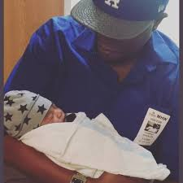

About Me

I am a front-end developer with a unique quirky and confident nature. A natural collaborative leader with a proven track record of managing and engaging in cutting edge technologies to advance company wide initiatives. For example, I was working at a wildlife hospital who was using Microsoft access to store animal intake information however not meeting the needs of the hospital. I worked with software developer to create a better way to archive our client cases with success. I’m extremely focused and a determined manager who offers the stamina and wisdom to drive the bottom line to peak performance. I have cultivated many profitable business relationships with honesty, integrity and respect. My strengths lie in my ability to know and understand my target audience, my background in engineering, accounting, and project management. I use my easy-going management strategy to inspire and reach creative goals.